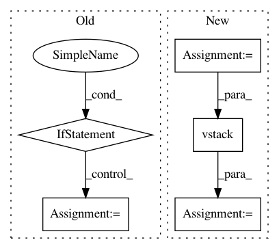

f8d9a6c144ef84bad2478a4ba4eedb1c559274e0,skimage/_shared/coord.py,,ensure_spacing,#,5
Before Change
indices = tree.query_ball_point(coord, r=spacing, p=p_norm)
rejected_peaks_indices = set()
for idx, candidates in enumerate(indices):
if idx not in rejected_peaks_indices:
// keep current point and the points at exactly spacing from it
candidates.remove(idx)
dist = distance.cdist([coord[idx]],
coord[candidates],
distance.minkowski,
p=p_norm).reshape(-1)
candidates = [c for c, d in zip(candidates, dist)
if d < spacing]
// candidates.remove(keep)
rejected_peaks_indices.update(candidates)
// Remove the peaks that are too close to each other
output = np.delete(coord, tuple(rejected_peaks_indices), axis=0)
return output
After Change
else:
batch_list = np.array_split(coords, batch_size)
output = np.zeros((0, coords.shape[1]))
for batch in batch_list:
output = _ensure_spacing(np.vstack([output, batch]),
spacing, p_norm)
return output
In pattern: SUPERPATTERN
Frequency: 3
Non-data size: 5
Instances
Project Name: scikit-image/scikit-image
Commit Name: f8d9a6c144ef84bad2478a4ba4eedb1c559274e0
Time: 2020-11-11
Author: rfezzani@gmail.com
File Name: skimage/_shared/coord.py
Class Name:
Method Name: ensure_spacing
Project Name: ANSSI-FR/SecuML
Commit Name: 39efccc696a1c20745a52cc50935cdc24f92230d
Time: 2019-05-09
Author: anael.beaugnon@ssi.gouv.fr
File Name: secuml/exp/data/features.py
Class Name: FeaturesFromExp
Method Name: get_matrix
Project Name: astroML/astroML
Commit Name: 4227f7c2810a6fc48165311e19a4a6aaac38475e
Time: 2019-04-16
Author: bsipocz@gmail.com
File Name: astroML/datasets/sdss_specgals.py
Class Name:
Method Name: fetch_sdss_specgals